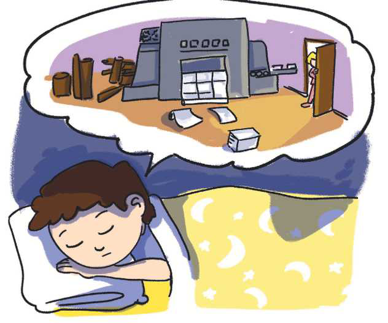

TEMATIKA 1: MATERIALET DHE PËRPUNIMI I TYRE
1.VALLJA E MATERIALEVE

Përnjëherë u errësua! Dielli shtrëngoi grushtet, si për të treguar se nuk kishte frikë. “Do të marr një dru stufe për t’u mbrojtur”, - mendoi.
Vrapoi te stufa, por çfarë të shihte? Drutë të rreshtuar njëri pas tjetrit po hynin në një makinë. Prej aty dilte vetëm letër. Madje lloj-lloj letre: e hollë, e trashë, letër banje, letër kuzhine, karton etj. Zhurma sa vinte e shtohej. Dielli mbylli veshët dhe u drejtua nga kuzhina. Për habi, lugë metali, plastike, druri, pjata qelqi e porcelani, peshqirë pambuku ishin lidhur së bashku e po hidhnin valle. Një dritë vezulluese ndriçoi vendin. Ai u nis drejt saj dhe e gjeti veten duke shkelur mbi gurë të ndryshëm prej ari, argjendi e diamanti.
Papritur dëgjoi zërin e Ditës: -Dielli! Dielli! Zgjohu! Sot do të shkojmë në punëtorinë e xhaxhi Burimit.